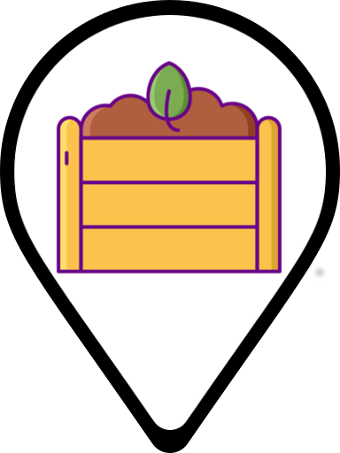
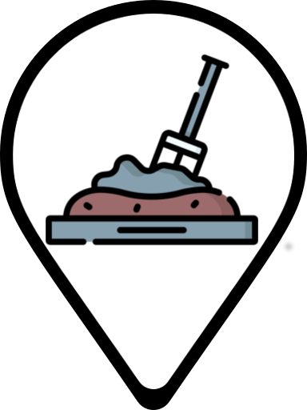

<!doctype html>
<html lang="en">
    <head>
        <meta charset="utf-8">
        <meta http-equiv="X-UA-Compatible" content="IE=edge">
        <meta name="viewport" content="initial-scale=1,user-scalable=no,maximum-scale=1,width=device-width">
        <meta name="mobile-web-app-capable" content="yes">
        <meta name="apple-mobile-web-app-capable" content="yes">
        <link rel="stylesheet" href="css/leaflet.css">
        <link rel="stylesheet" href="css/qgis2web.css"><link rel="stylesheet" href="css/fontawesome-all.min.css">
        <style>
        html, body, #map {
            width: 100%;
            height: 100%;
            padding: 0;
            margin: 0;
        }
        </style>
        <title></title>
    </head>
    <body>
        <div id="map">
        </div>
        <script src="js/qgis2web_expressions.js"></script>
        <script src="js/leaflet.js"></script>
        <script src="js/leaflet.rotatedMarker.js"></script>
        <script src="js/leaflet.pattern.js"></script>
        <script src="js/leaflet-hash.js"></script>
        <script src="js/Autolinker.min.js"></script>
        <script src="js/rbush.min.js"></script>
        <script src="js/labelgun.min.js"></script>
        <script src="js/labels.js"></script>
        <script src="data/Hoteles_Compost_1.js"></script>
        <script>
        const CompostingIcon = L.divIcon({
            html: '</i>',
            className: 'CompostingDivIcon'});
        const CompostingInProcessIcon = L.divIcon({
            html: '</i>',
            className: 'CompostingInProgressDivIcon'});

        var map = L.map('map', {
            zoomControl:true, maxZoom:20, minZoom:11
        }).fitBounds([[-25.616771330833632,-54.58965854432208],[-25.59161470488264,-54.550198326828024]]);
        var hash = new L.Hash(map);
        map.attributionControl.setPrefix('<a href="https://github.com/tomchadwin/qgis2web" target="_blank">qgis2web</a> &middot; <a href="https://leafletjs.com" title="A JS library for interactive maps">Leaflet</a> &middot; <a href="https://qgis.org">QGIS</a>');
        var autolinker = new Autolinker({truncate: {length: 30, location: 'smart'}});
        var bounds_group = new L.featureGroup([]);
        function setBounds() {
        }
        map.createPane('pane_OSMStandard_0');
        map.getPane('pane_OSMStandard_0').style.zIndex = 400;
        var layer_OSMStandard_0 = L.tileLayer('http://tile.openstreetmap.org/{z}/{x}/{y}.png', {
            pane: 'pane_OSMStandard_0',
            opacity: 1.0,
            attribution: '<a href="https://www.openstreetmap.org/copyright">© OpenStreetMap contributors, CC-BY-SA</a>',
            minZoom: 11,
            maxZoom: 20,
            minNativeZoom: 0,
            maxNativeZoom: 19
        });
        layer_OSMStandard_0;
        map.addLayer(layer_OSMStandard_0);
        function pop_Hoteles_Compost_1(feature, layer) {
            var popupContent = '<table>\
                    <tr>\
                        <td colspan="2"><strong>Nombre</strong><br />' + (feature.properties['Nombre'] !== null ? autolinker.link(feature.properties['Nombre'].toLocaleString()) : '') + '</td>\
                    </tr>\
                    <tr>\
                        <th scope="row">Latitude</th>\
                        <td>' + (feature.properties['Latitude'] !== null ? autolinker.link(feature.properties['Latitude'].toLocaleString()) : '') + '</td>\
                    </tr>\
                    <tr>\
                        <th scope="row">Longitude</th>\
                        <td>' + (feature.properties['Longitude'] !== null ? autolinker.link(feature.properties['Longitude'].toLocaleString()) : '') + '</td>\
                    </tr>\
                    <tr>\
                        <td colspan="2"><strong>Estado</strong><br />' + (feature.properties['Estado'] !== null ? autolinker.link(feature.properties['Estado'].toLocaleString()) : '') + '</td>\
                    </tr>\
                    <tr>\
                        <th scope="row">Encargado</th>\
                        <td>' + (feature.properties['Encargado'] !== null ? autolinker.link(feature.properties['Encargado'].toLocaleString()) : '') + '</td>\
                    </tr>\
                    <tr>\
                        <th scope="row">Puesto o área responsable</th>\
                        <td>' + (feature.properties['Puesto o área responsable'] !== null ? autolinker.link(feature.properties['Puesto o área responsable'].toLocaleString()) : '') + '</td>\
                    </tr>\
                    <tr>\
                        <th scope="row">Tipo de ícono</th>\
                        <td>' + (feature.properties['Tipo de ícono'] !== null ? autolinker.link(feature.properties['Tipo de ícono'].toLocaleString()) : '') + '</td>\
                    </tr>\
                </table>';
            layer.bindPopup(popupContent, {maxHeight: 400});
        }

        function style_Hoteles_Compost_1_0(feature) {
            switch(String(feature.properties['Tipo de ícono'])) {
                case 'Amarillo':
                    return {
                icon:  CompostingInProcessIcon,
                interactive: true,
            }
                    break;
                case 'Verde':
                    return {
                icon: CompostingIcon,
                interactive: true,
            }
                    break;
            }
        }
        map.createPane('pane_Hoteles_Compost_1');
        map.getPane('pane_Hoteles_Compost_1').style.zIndex = 401;
        map.getPane('pane_Hoteles_Compost_1').style['mix-blend-mode'] = 'normal';
        var layer_Hoteles_Compost_1 = new L.geoJson(json_Hoteles_Compost_1, {
            attribution: '',
            interactive: true,
            dataVar: 'json_Hoteles_Compost_1',
            layerName: 'layer_Hoteles_Compost_1',
            pane: 'pane_Hoteles_Compost_1',
            onEachFeature: pop_Hoteles_Compost_1,
            pointToLayer: function (feature, latlng) {
                var context = {
                    feature: feature,
                    variables: {}
                };
                return L.marker(latlng, style_Hoteles_Compost_1_0(feature));
            },
        });
        bounds_group.addLayer(layer_Hoteles_Compost_1);
        map.addLayer(layer_Hoteles_Compost_1);
        setBounds();
        </script>
    </body>
</html>
